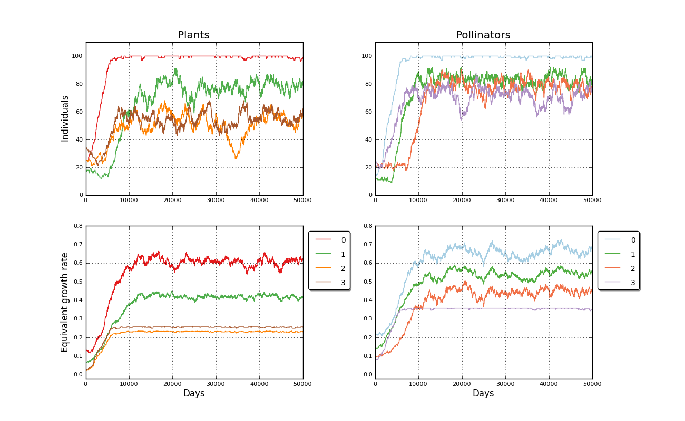
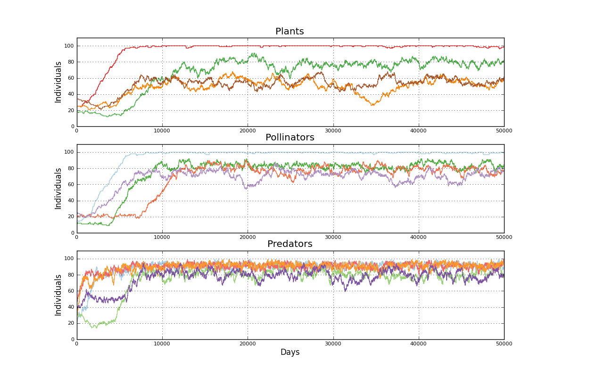

Binomial simulated mutualistic interaction. Input file: 4pim_fw   days: 50000<br>============================================================================<br>User Comment: Red con foodweb<br>Mutualist interactions enabled<br><br>Plants matrix: <a href='../input/4pim_fw_a.txt' target=_BLANK>4pim_fw_a.txt<a><br>Pollinators matrix: <a href='../input/4pim_fw_b.txt' target=_BLANK>4pim_fw_b.txt<a><br>Predators matrix c:<a href='../input/4pim_fw_c.txt target=_BLANK'>4pim_fw_c.txt<a><br>Predators matrix d:<a href='../input/4pim_fw_d.txt target=_BLANK'>4pim_fw_d.txt<a><br>Predator species : 5<br>Plant species: 4<br>Plant initial populations [25, 18, 25, 35]<br>Pollinator species: 4<br>Pollinator initial populations [15, 11, 20, 25]<br>Elapsed time 45.09 s<br><br>Created 2012-07-09 16:57:36.562000<br><br><br>Populations evolution picture<br><table border=0><tr><td></td></tr></table><P><br><br>Foodweb effect picture<br><br>